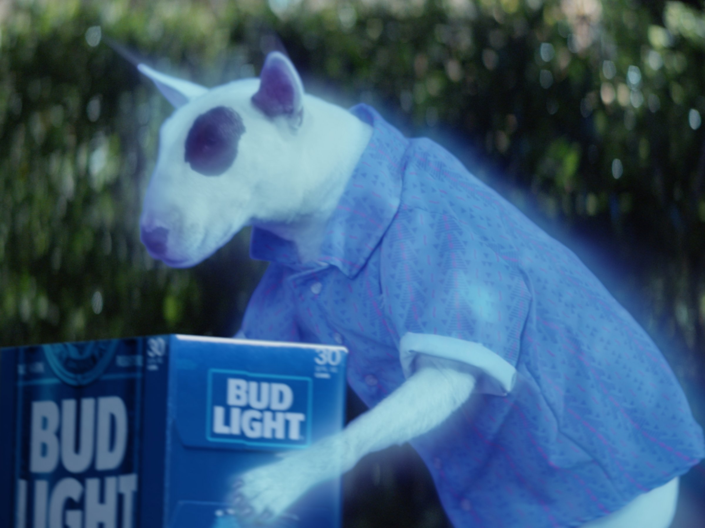

Classes I've Taken
- Computer Science
-
-
How to Design Programs
- Semester Taken: Freshman Fall
- What I Learned: Basic programming concepts, Pyret programming language, that I liked CS
- How I Could Have Done Better: Read documentation rather than pestering answers out of the poor TA
-
Computer Science 1
- Semester Taken: Freshman Spring
- What I Learned: Imperative programming, Python programming language, sequent calculus
- How I Could Have Done Better: Gone to professor's officer hours rather than relying on Stack Overflow
-
Computer Science 2
- Semester Taken: Sophomore Fall
- What I Learned: Functional programming, SML programming language, bayesian statistics
- How I Could Have Done Better: Studied more rather than assuming my concurrent leetcode practice would pull me through
-
Programming Langauge Implementation
- Semester Taken: Sophomore Spring
- What I Learned: How to implement a lexer, parser, type engine, interpreter, and compiler
- How I Could Have Done Better: TBA
-
Network Science
- Semester Taken: Sophomore Spring
- What I Learned: Advanced graph theory, centrality measures, NetworkX framework
- How I Could Have Done Better: TBA
-
- Mathematics
-
-
Calculus 1
- Semester Taken: Freshman Fall
- What I Learned: Derivation
- How I Could Have Done Better: Studied more rather than relying on past experience
-
Calculus 2
- Semester Taken: Freshman Spring
- What I Learned: Integration
- How I Could Have Done Better: Not let life problems get in the way of turning in homework on time
-
Discrete Mathematics
- Semester Taken: Freshman Summer
- What I Learned: Inductive proofs, set theory, graph theory, etc.
- How I Could Have Done Better: Dedicated more time to memorize concepts that I knew I'd see again in CS
-
Linear Algebra
- Semester Taken: Freshman Summer
- What I Learned: Properties of vectors and matrices
- How I Could Have Done Better: Actually learned what was conceptually going on rather than just memorizing functions

-
- Data Science
-
-
Working with VBA
- Semester Taken: Freshman Spring
- What I Learned: The process of implementing macros in Excel
- How I Could Have Done Better: Taken better notes so that I could refer to them in the future when using Excel
-
Working with Python
- Semester Taken: Freshman Spring
- What I Learned: Statistical methods using Python
- How I Could Have Done Better: Done something nontrivial for my final
-
Working with Neural Networks
- Semester Taken: Sophomore Fall
- What I Learned: How to implement various types of neural networks
- How I Could Have Done Better: Fixed some critical bugs in my final
-
Data Journalism
- Semester Taken: Sophomore Spring
- What I Learned: Tableau, data probing, data ethics
- How I Could Have Done Better: Taken greater advantage of the professor's availability
-